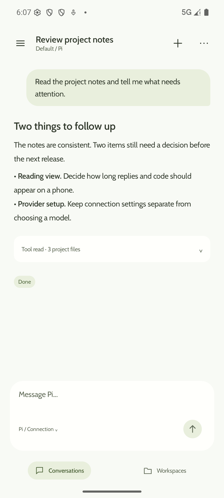
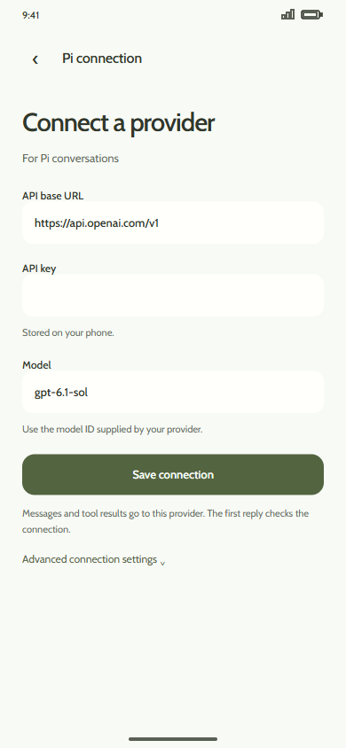
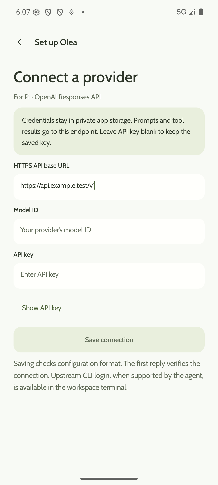
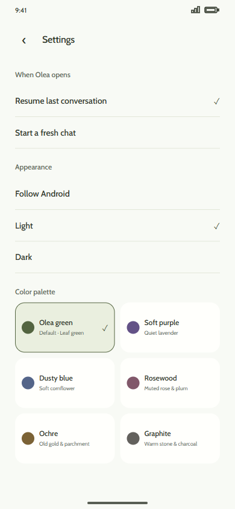
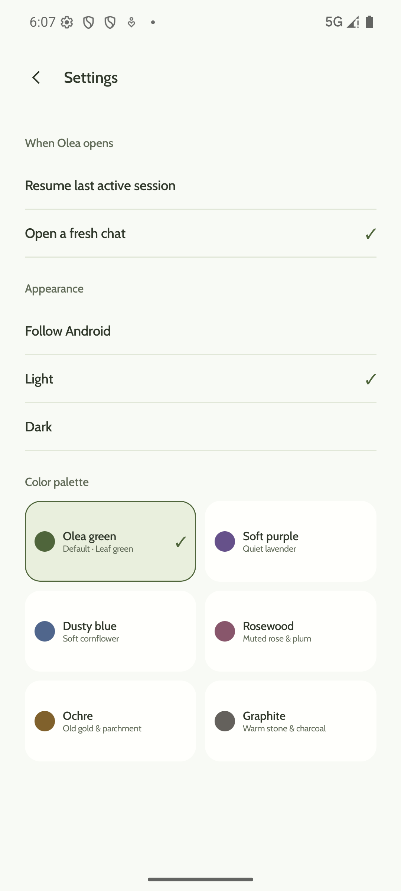
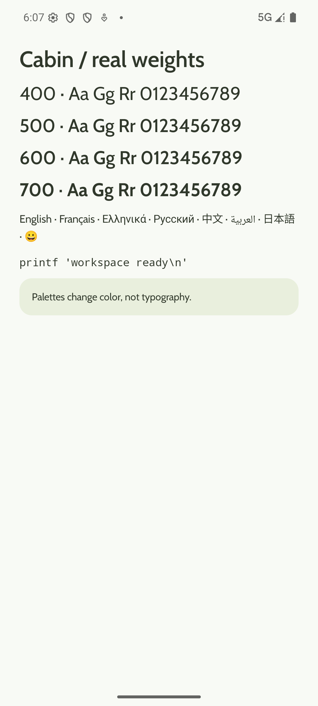
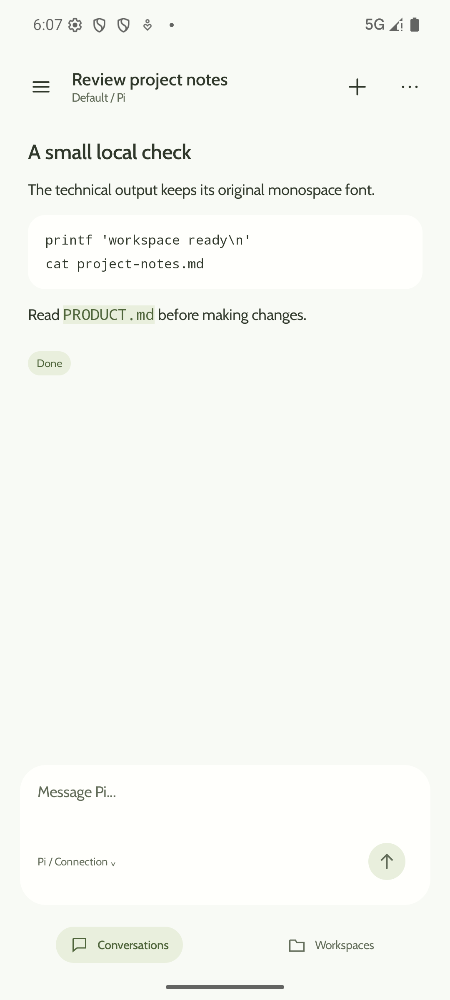

The approved upright variable Cabin file is bundled locally with its complete SIL Open Font License. Regular 400, medium 500, semibold 600 and bold 700 use explicit variation axes at normal width 100, with font synthesis disabled. Code and terminal remain monospace.
Native images: actual Android rendering of synthetic snapshots in dev.olea.softtest, emulator-5554 / Android 16 / x86_64, 1080 × 2400 px at 420 dpi, build implementation 21c5ab0. No provider requests. Browser references use the identical approved Cabin binary at 390 × 844 CSS px. Native system bars, keyboard and fallback glyphs remain Android-owned.
The native Soft composition, dimensions, palette, line heights and touch targets stay the same. Cabin gives the headings and body their approved curved forms. Header workspace text differs between the diagnostic sessions; the user/reply content is equivalent.

Both load the same font SHA-256. Android sp/dp, native 48 dp targets, system bars, line-breaking and hint metrics affect the final composition. The form keeps its existing supported API fields and explanatory notice.




Compose resolves four resource faces. Their variable outlines produce increasing painted coverage with isFakeBoldText=false. Android's Typeface.weight reports the source file's default 400 for all variation instances; the explicit axis settings and distinct glyph metrics provide the weight evidence. The font itself lacks the tested CJK/Arabic glyphs, while Android's resolved typeface renders them through fallback.
| Axis weight | Sample width at 48 px | Painted alpha coverage |
|---|---|---|
| 400 | 575 px | 1,650,737 |
| 500 | 578 px | 1,828,623 |
| 600 | 582 px | 1,914,930 |
| 700 | 585 px | 2,058,835 |


The measured body paragraph stays at 14 sp / 25.2 sp line height: five lines at 411 dp and ten lines at 320 dp with 1.5× sp scaling. The earlier system font takes eleven lines in that enlarged/narrow measurement. No layout or line-height adjustment was necessary. Scrollable content and the real IME remain usable.